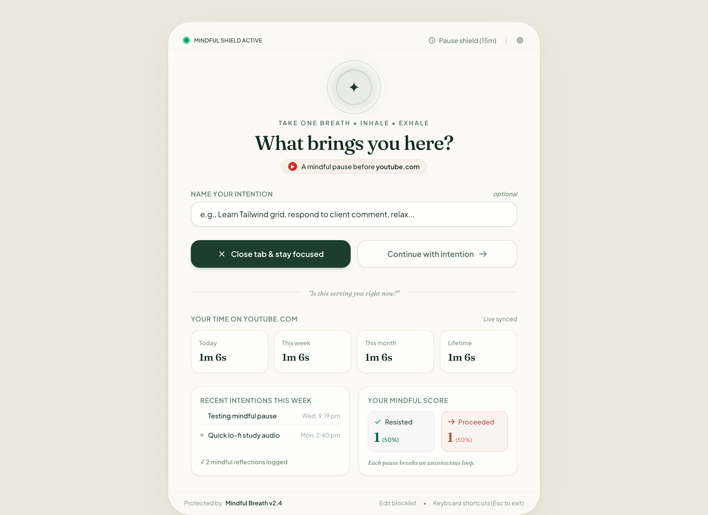

Break the loop of mindless browsing.
TinyPause introduces an intentional moment of calm before you enter distracting websites. Take one conscious breath, state your intent, and stay in control—with zero telemetry and 100% private local storage.
Interactive Experience
Experience the pause right now.
Simulate what happens when you attempt to visit a monitored site. Feel the difference conscious friction makes.
What brings you to x.com?
State your purpose before continuing, or close this tab and return to focus.
How It Works
Mindful ArchitectureNavigate to Monitored Sites
When muscle memory urges you to click Twitter, Reddit, or your customized list of distracting domains, TinyPause immediately intercepts the request.
Take One Conscious Breath
Instead of endless algorithmic feeds, a serene pause screen greets you with a breathing circle. You must record an intention with at least four characters.
Choose Mindfully
Proceed with stated purpose, or hit "Close Tab" to walk away. If you proceed, TinyPause precisely tracks your active foreground time without saving private content.
Thoughtful Craft
Designed to calm, not punish.
Most site blockers use aggressive red warning screens that cause guilt and defiance. TinyPause uses organic serenity that fosters true agency.

Key Capabilities
Built for HumansThe Intention Gate
Requires typing at least 4 letters explaining why you are visiting. This micro-moment of typing engages your conscious brain and breaks automatic doomscrolling.
Foreground-Only Duration Tracking
Time only counts while the monitored tab is actively in the focused window. Leaving a tab open in the background will never inflate your active time statistics.
100% Local Browser Storage
Your site list, recorded intentions, and browsing metrics stay on your machine inside storage.local. Zero servers, zero telemetry.
One-Click Tab Eject
Realized you only opened the site out of habit? The prominent "Close Tab" button instantly dismisses the tab before you get hooked by the feed.
Frequently Asked Questions
How is TinyPause different from traditional site blockers? +
Traditional site blockers lock you out completely, which often leads to frustration, willpower depletion, and disabling the extension. TinyPause does not ban sites; it introduces mindful friction. By forcing a breath and an intention, you decide whether your visit is purposeful or mindless habit.
Does TinyPause track or transmit my browsing data? +
Never. TinyPause does not communicate with any external backend servers. Your list of monitored domains, typed intentions, and session timestamps are stored solely in your browser's local extension storage. You can clear this history anytime in the settings.
Which browsers are supported? +
TinyPause is built natively on Manifest V3 and supports Google Chrome 120+, Mozilla Firefox 115+, Brave, Arc, Edge, and other Chromium-based browsers.
Can I add custom domains to monitor? +
Yes. Through the Settings page, you can add any website you find yourself browsing compulsively—whether it's news sites, shopping portals, video platforms, or forums.
Ready to reclaim your time?
Install TinyPause for free. No credit card, no email signup, no trackers.